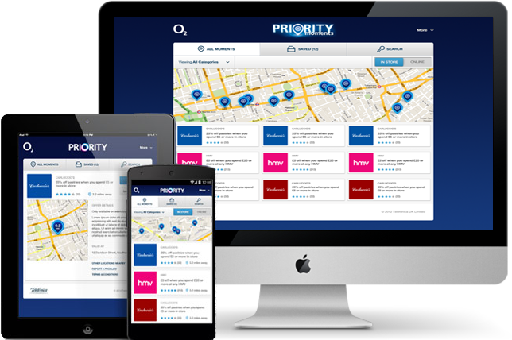
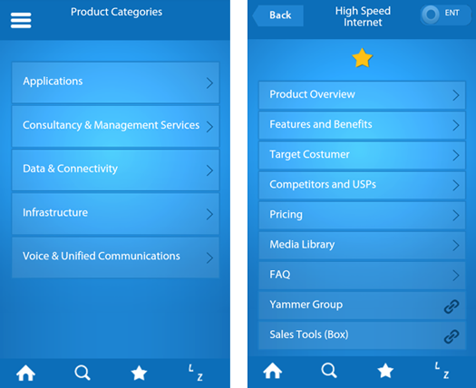

Priority Moments Responsive is a web Application for o2 Customers. It show’s different types of merchant offers like instore and online from different categories. And allow them to accept, save ,search, delete saved and rate offers. This is a responsive Project which is supporting different types of Android Devices , iphones , ipad and desktop.

O2 Biz Product is app which gives information about o2 product.This is build using Jquery Mobile. WE have overridden JQuery CSS to Achieve Our Designs. Basically it is web app. We are Supporting Windows Phone, iphone and Android and Desktop browser.